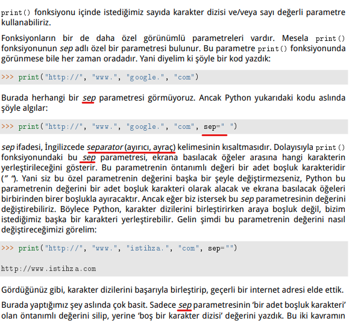
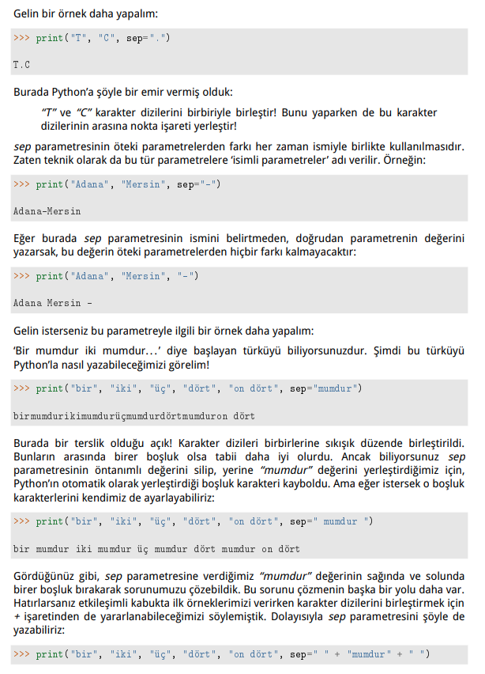
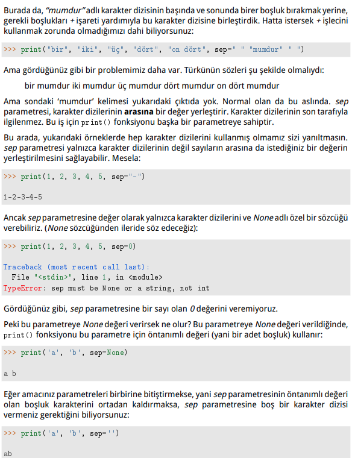
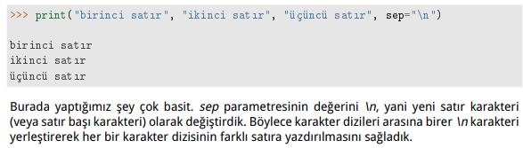

sep (separate)
sep (separate) parameter
print() fonksiyonu içine birde fazla karakter dizisi veya sayı değeri koyduğumuzda bunların arasına koyulacak karakteri belirlememizi sağlar. Sep parametresi için default olarak bu değer boşluktur “ ”



